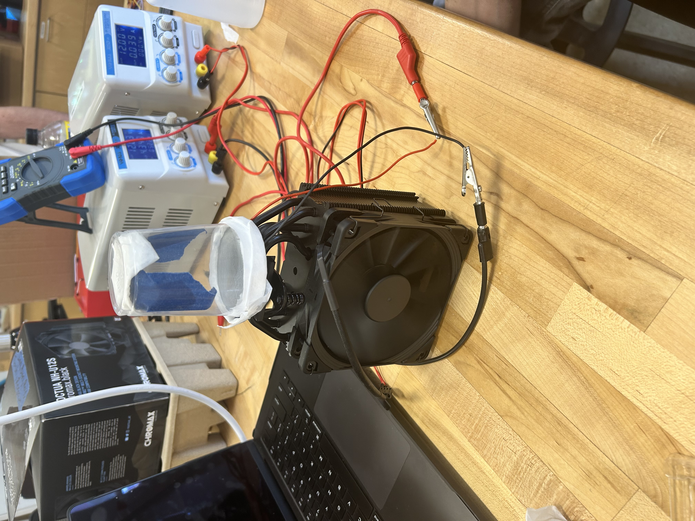
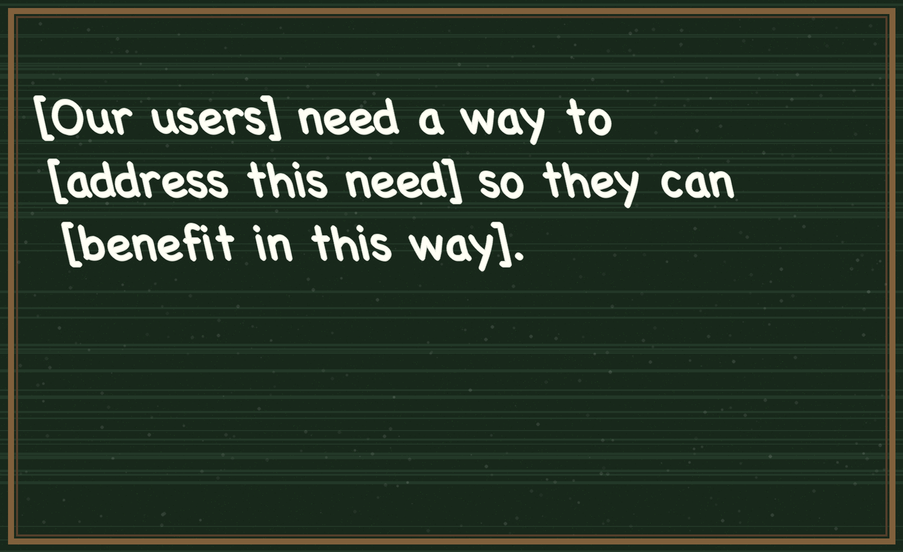
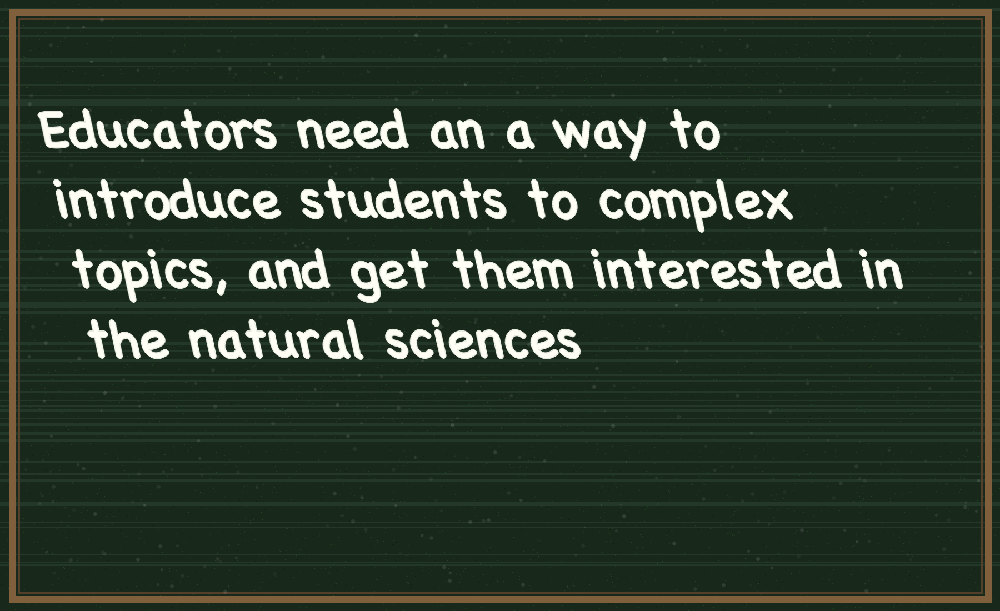
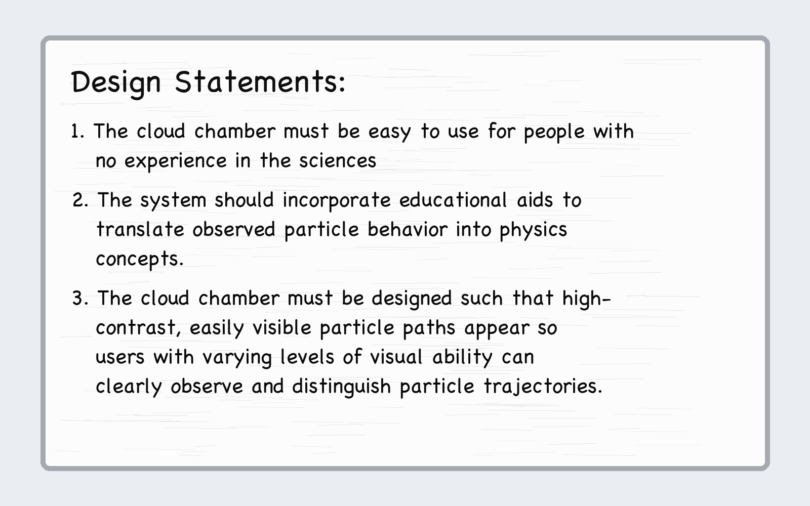
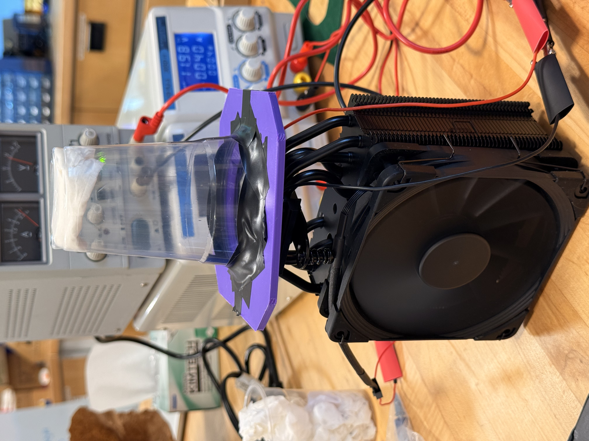
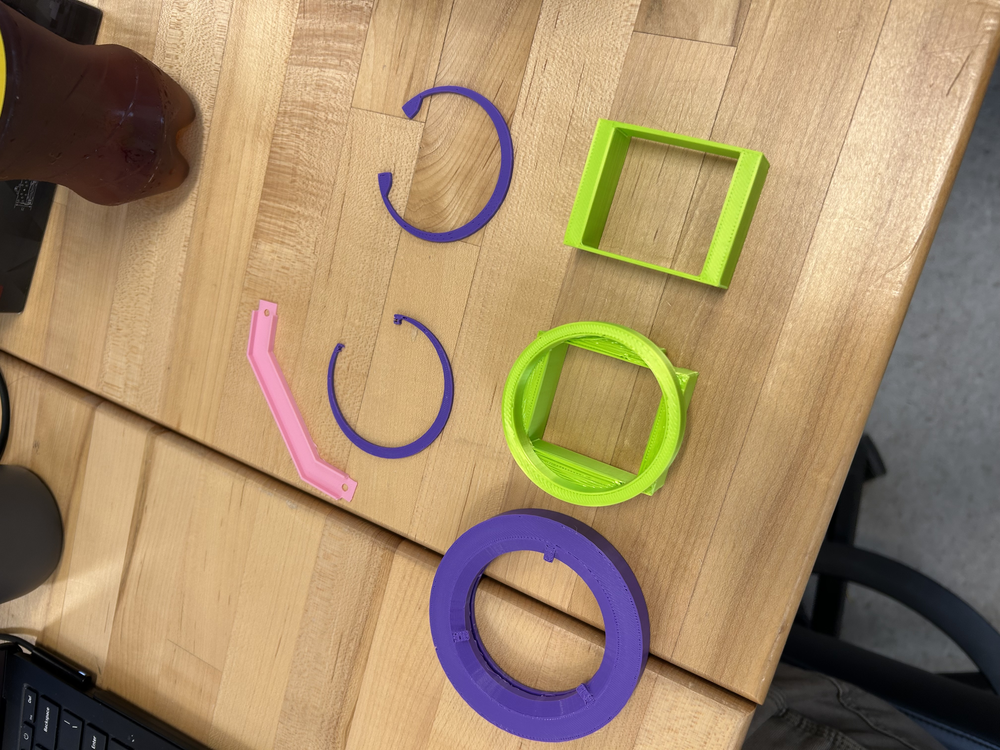

Design Project: Peltier-Cooled Diffusion Cloud Chamber
In this project, I explored other ways to use AI to design my website. Linked above are two versions of my write-up. The first version I fed to Codex, OpenAI’s coding agent, is full of agent commands and requests. The second version is the normal write-up without the agent commands. By just writing the commands in the document, I basically created this website section in one prompt.
Stage 2: Needs Statement, Design Principals, and Iterative Prototyping
When writing our needs statement, we focused on how the cloud chamber could be used as an effective education tool rather than a fun science project or mysterious spectacle. We knew that the statement should not detail how the chamber would be built but instead the intention behind the particular design. This project requires trial-and-error jury-rigging to test the power source, Peltier, and prototype bases, so we have been focusing on design and modification for two weeks.

Focusing only on the perceived benefits of the cloud chamber without discussing its features or design was a challenge after constant iteration. The slide deck from the IBM link in our project guidelines was helpful, as in that activity, we were instructed to begin formulating the statement with,

After a few iterations of the statement, we honed in on a few key ideas. First of all, we first assumed our user would be a student. This is still true; however, we neglected to consider the educator, who would hypothetically use the cloud chamber in a demonstration or experiment project. In addition, we wanted to broaden our view. The cloud chamber should be used to get people excited about all sorts of science, not just physics but the chemistry behind supersaturation, the math behind describing particles, and even engineering. With all that in mind, we decided what our needs statement would be.

We first decided that success would be anyone who used the cloud chamber and wanted to learn more about the science behind it. Success could also be a student of a relevant science who’s confused about subatomic particles or how they behave. If we could better their understanding of the subject, that is also a win. As I said above, we realized we wanted to broaden our audience, so our design principles are focused on how our cloud chamber can be accessible as possible.

The last statement may be the most obvious. The particles should be easy to see in our cloud chamber. Good lighting and a backdrop are the best we can do in this short design period, even though it would be hard to make the chamber usable for those with impaired vision. The second principle was established to better assist our users, the educators. The cloud chamber should have some features dedicated to helping it be an educational tool. Finally, we want this chamber to be safe, but still fun and effective. We recently discussed adding a feature so sliding an alpha particle-emitting banana would be an easy way to show everyday objects can be radioactive. Much more fun than waiting around for particles in the atmosphere.

Our next step was an all-out iteration sprint through prototypes. In the following slides, read about how designs changed in each version.
Much of this stage of the project focused on how we measure success in our project. While we had little time to quantitatively test things like plastic temperature resistance, our real success came from design improvements. Especially in the iteration cycles, we made huge leaps in terms of design quality and usability. In addition, trying to get the actual chamber working has forced us to become very familiar with the parameters that a working cloud chamber needs tuned and how to tune them. At the beginning of this week, we had neither a working design nor an electrical setup. Now, all we need is to combine our PETG enclosure with the Peltier cooler and troubleshoot small issues until we see electrons.
